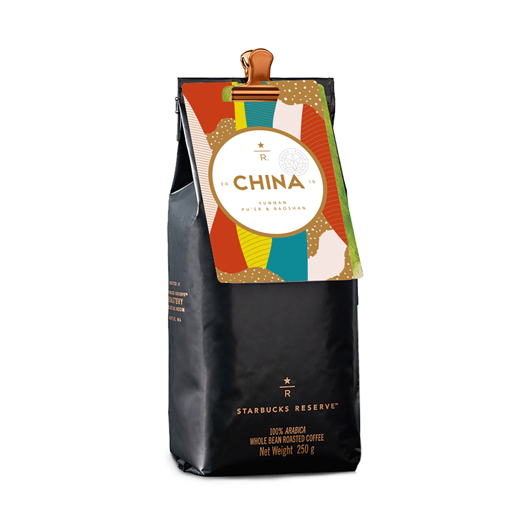
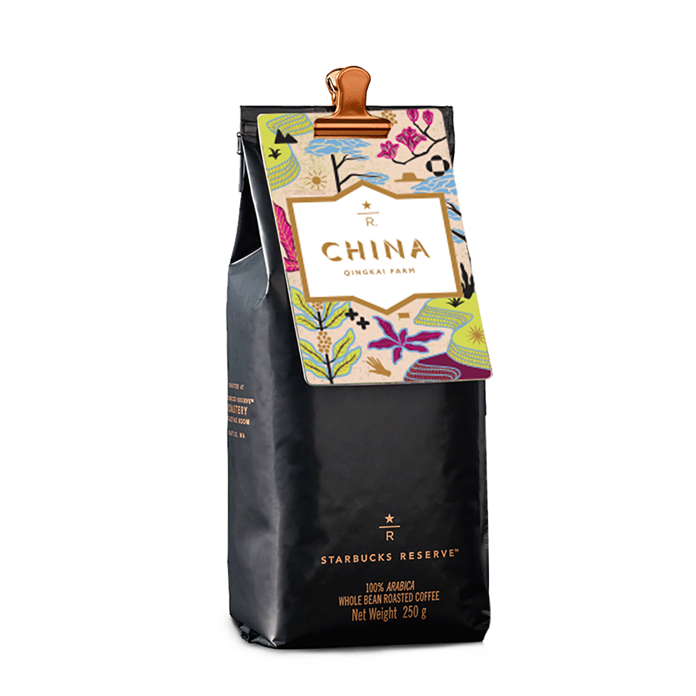

代表我们更高品质的
星巴克臻选™咖啡
我们走访世界各地搜罗品质出众的咖啡豆，当中只有少量珍贵而独特风味的 品种，才会被冠以星巴克臻选™的称号。 它们不可多得，且拥有让人着迷的风味。 这些臻选™咖啡豆只在指定星巴克门店限量供应。
查看星巴克臻选™咖啡门店
限量供应
最新星巴克臻选™咖啡
-

中国云南普洱保山
综合咖啡豆 -

中国云南晴开农场
咖啡豆 -
埃塞俄比亚比塔庄
园咖啡豆
什么是星巴克臻选™咖啡
每年，我们的伙伴环游世界，只为找到上乘的咖啡。每隔一段时间，我们都会找到一款珍贵而独特的咖啡豆，并且迫不及待地想将他们带回来和大家分享。我们在支持中心的采购部门以及农业学家们一直致力于帮助全世界的咖啡种植者们，通过与他们合作，我们希望获得发现不同寻常并且独特的咖啡种类的机会。而在我们的品鉴部门，我们的专业品鉴师每年会品尝超过25万杯咖啡，然后再从中选取稀有而独特的几个种类来制作星巴克臻选™咖啡。
风土条件
咖啡的生长，就如同酿酒的葡萄，受到不同产区的具体生长环境的影响，形成了大部分的风味。咖啡生长地区的土地，气温，海拔，降雨量和阳光等众多可变因素赋予了咖啡一系列特殊的个性，呈现出一杯美味的咖啡。加工方法
每一颗咖啡豆的生命都始于一颗咖啡浆果的种子。这颗咖啡果实如何被从咖啡豆中取出 – 也就是我们说的咖啡豆的加工 – 对于咖啡的风味有着直接的，甚至是巨大的影响。咖啡在烘焙前的收获，碾磨，水洗或者自然加工，甚至陈年豆的处理都可以成就一杯口味令人惊叹的咖啡。咖啡品种
咖啡品种有着悠久的历史，可以创造出一杯珍贵稀有的咖啡。最常见的四种阿拉比卡咖啡的变种为波旁，铁毕卡，卡杜拉和卡杜艾。波旁和铁毕卡是原生种咖啡豆，是所有咖啡树的原型。卡杜拉和卡杜艾是波旁混合种的后代，混合了（通过自然混合或人工方法）两种现有咖啡的变种后得到，创造出一杯崭新的咖啡。人文故事
每一款星巴克臻选™咖啡的背后都讲述了一个关于家庭，种植农和社区的故事。这些人文故事带给我们的是星巴克臻选™体验中不可或缺的一部分。